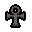
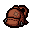
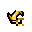
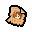
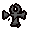

주사위 제거 · 새 층마다 주사위 선택
- 시작방 추가
- 신성한 카드
고유 규칙 및 추가 금지
- 시작할 때 기본 주사위를 제거합니다.
- 새 층에 들어가면 지정된 주사위 13종 중 2개가 선택 아이템으로 등장합니다. 하나를 고르면 다른 하나는 사라집니다. 멀티플레이에서는 먼저 확인된 일반 아이작 한 명에 대해서만 생성합니다.
- 새 층에 들어갈 때 먼저 확인된 일반 아이작의 주 액티브 슬롯 아이템을 제거합니다.
- 선택 후보는 스핀다운 주사위·주사위·4면 주사위·스핀업 주사위·거울 주사위·성스러운 주사위·재활용 주사위·금지된 주사위·양자 주사위·퍼즐 주사위·글리치 주사위·혼돈의 주사위·천사빛 주사위입니다.
캐릭터별 추가 금지
아이템    
장신구 실종 포스터, 